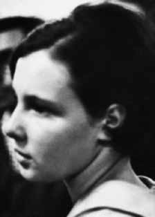

Aurora
Maria
Nascimento
Furtado
BIOGRAFIA
Militante da Ação Libertadora Nacional (ALN), Aurora Maria Nascimento Furtado foi assassinada pela ditadura militar aos 26 anos. Estudante de Psicologia na Universidade de São Paulo, teve militância ativa no movimento estudantil nos anos de 1967 e 1968. Conhecida como Lola, foi militante do Partido Comunista Brasileiro (PCB) até o Ato Institucional Nº5 (AI-5), quando passou para a clandestinidade ao entrar para a ALN.
Em 1972, foi presa, sofrendo torturas desde o momento de sua detenção. Foi encaminhada à “Invernada de Olaria”, uma grande delegacia da polícia civil no subúrbio carioca, ligada ao Esquadrão da Morte (hoje sede de um batalhão da PM). Lá, sofreu torturas no pau de arara, sessão de choques elétricos, espancamentos, afogamentos e queimaduras. Aurora foi submetida ao suplício da “coroa de Cristo”, uma tira de aço com parafusos colocada em volta da cabeça que gradativamente apertada leva ao esmagamento do crânio, fazendo os olhos saltarem para fora das órbitas.
A trajetória de Aurora e seu sofrimento na tortura foram narrados no romance “Em Câmara Lenta” (1977), escrito pelo ex-preso político e cineasta Renato Tapajós.
A militant of the National Liberation Action (ALN), Aurora Maria Nascimento Furtado was murdered by the military dictatorship at the age of 26. A Psychology student at the University of São Paulo, she was active in the student movement in 1967 and 1968. Known as Lola, she was a member of the Brazilian Communist Party (PCB) until Institutional Act No. 5 (AI-5), when she went underground upon joining the ALN.
In 1972, she was arrested, suffering torture from the moment of her arrest. She was taken to the “Invernada de Olaria”, a large civil police station in the Rio suburbs, linked to the Death Squad (today the headquarters of a PM battalion). There, he suffered torture using a macaw stick, electric shock sessions, beatings, drownings and burns. Aurora was subjected to the torture of the “crown of Christ”, a steel strip with screws placed around her head that gradually tightened, causing the skull to be crushed, causing her eyes to bulge out of their sockets.
Aurora's trajectory and her suffering during torture were narrated in the novel “Em Câmara Lenta” (1977), written by former political prisoner and filmmaker Renato Tapajós.
Militante de la Acción de Liberación Nacional (ALN), Aurora Maria Nascimento Furtado fue asesinada por la dictadura militar a los 26 años. Estudiante de Psicología en la Universidad de São Paulo, participó activamente en el movimiento estudiantil en 1967 y 1968. Conocida como Lola, militó en el Partido Comunista Brasileño (PCB) hasta el Acto Institucional nº 5 (AI-5), cuando pasó a la clandestinidad al unirse a la ALN.
En 1972 fue detenida, sufriendo torturas desde el momento de su detención. La llevaron a la “Invernada de Olaria”, una gran comisaría de policía civil en los suburbios de Río, vinculada al Escuadrón de la Muerte (hoy cuartel general de un batallón de PM). Allí sufrió torturas con un palo de guacamayo, sesiones de descargas eléctricas, golpes, ahogamiento y quemaduras. Aurora fue sometida a la tortura de la “corona de Cristo”, una tira de acero con tornillos colocados alrededor de su cabeza que poco a poco se iban apretando, provocando que el cráneo se aplastara, provocando que sus ojos se salieran de sus órbitas.
La trayectoria de Aurora y su sufrimiento durante la tortura fueron narrados en la novela “Em Câmara Lenta” (1977), escrita por el ex preso político y cineasta Renato Tapajós.
CIRCUNSTÂNCIAS DA MORTE
Aurora Maria Nascimento Furtado morreu em São Paulo, no dia 10 de novembro de 1972, depois de ter sido presa e torturada por agentes da repressão.
A versão divulgada à época pelos órgãos oficiais do Estado dizia que Aurora havia sido atingida por disparo de arma de fogo e morrido em confronto armado com agentes militares. A nota emitida pelos órgãos oficiais e publicada pelos jornais O Estado de São Paulo e Jornal do Brasil, no dia 11 de novembro de 1972, afirmava que Aurora, presa no dia 9 de novembro de 1972, conduzia agentes policiais a um aparelho da ALN localizado no Méier quando teria tentado fugir, correndo em direção a veículo estacionado nas proximidades do local. A versão sugere que Aurora estaria sendo resgatada por outros militantes. Nesse momento, teria começado intenso tiroteio entre os ocupantes do veículo e a polícia, fato que resultou na morte de Aurora.
Investigações empreendidas ao longo dos anos identificaram evidências de que Aurora morreu em razão das torturas a que foi submetida. Conforme destacou a CEMDP e a Comissão de Familiares de Mortos e Desaparecidos Políticos, o laudo cadavérico de Aurora, elaborado pelos médicos legistas Elias Freitas e Salim Raphael Balassiano, atesta que os tiros foram disparados contra Aurora quando ela já estava morta, o que indicação a construção de um “teatrinho” para encobrir a sua morte sob tortura. Apesar de confirmar a versão divulgada pelos órgãos de segurança, o laudo afirma expressamente que “as cavidades plurais não contêm sangue; a cavidade abdominal não contém sangue; na região glútea direita há três orifícios sem reação vital”, indícios de que Aurora morreu antes de ser atingida pelos disparos de arma de fogo. O laudo descreve, no total, 29 perfurações, mas não especifica as entradas e saídas dos tiros. O documento também aponta para a existência de lesões no crânio que não foram provocadas por balas de arma de fogo, o que permite inferir que resultaram de tortura.
Em depoimento à CEMDP, Sandra Maria Furtado de Macedo, irmã de Aurora, responsável por identificar seu corpo no IML, afirmou serem evidentes as marcas de tortura no corpo, tais como machucados na boca, fraturas nos braços, além de visível afundamento do crânio, posteriormente associado à técnica de tortura a que teria sido submetida, conhecida como “Coroa de Cristo”, na qual se aperta gradativamente uma fita de aço na cabeça da vítima. As declarações de Sandra são comprovadas pelas fotos de perícia de local, encontradas no arquivo do Instituto de Criminalística Carlos Éboli, no Rio de Janeiro.
Em depoimento no livro “Os anos de chumbo: a memória militar sobre a repressão”, o general de Brigada da reserva e ex-comandante do Centro de Operações de Defesa Interna (CODI) do I Exército, Adyr Fiúza de Castro, afirmou que Aurora foi levada à Invernada de Olaria, onde, confundida inicialmente com uma traficante, foi brutalmente torturada e morta.
O corpo de Aurora deu entrada no Instituto Médico-Legal (IML) com identidade desconhecida. Foi posteriormente reconhecido por seus pais e por sua irmã, que o trasladaram para São Paulo em caixão lacrado, com ordens expressas de que não fosse aberto. Os restos mortais de Aurora Nascimento Furtado foram enterrados no cemitério de São Paulo, no dia 12 de novembro de 1972.
Aurora Maria Nascimento Furtado died in São Paulo, on November 10, 1972, after being arrested and tortured by repression agents.
The version released at the time by official state bodies said that Aurora had been hit by a gunshot and died in an armed confrontation with military agents. The note issued by official bodies and published by the newspapers O Estado de São Paulo and Jornal do Brasil, on November 11, 1972, stated that Aurora, arrested on November 9, 1972, was leading police agents to an ALN device located in Méier when she allegedly tried to escape, running towards a vehicle parked nearby. The version suggests that Aurora was being rescued by other militants. At that moment, an intense shootout began between the vehicle's occupants and the police, which resulted in Aurora's death.
Investigations carried out over the years have identified evidence that Aurora died as a result of the torture to which she was subjected. As highlighted by CEMDP and the Commission of Relatives of the Political Dead and Missing, Aurora's cadaver report, prepared by coroners Elias Freitas and Salim Raphael Balassiano, attests that the shots were fired at Aurora when she was already dead, which indicates the construction of a “little theater” to cover up her death under torture. Despite confirming the version released by security agencies, the report expressly states that “the plural cavities do not contain blood; the abdominal cavity does not contain blood; in the right gluteal region there are three holes with no vital reaction”, evidence that Aurora died before being hit by the gunshots. The report describes, in total, 29 perforations, but does not specify the entry and exit points of the shots. The document also points to the existence of injuries to the skull that were not caused by firearm bullets, which allows us to infer that they resulted from torture.
In a statement to CEMDP, Sandra Maria Furtado de Macedo, Aurora's sister, responsible for identifying her body at the IML, stated that the marks of torture on the body were evident, such as bruises in the mouth, fractures on the arms, in addition to the visible sinking of the skull, later associated with the torture technique to which she was allegedly subjected, known as the “Crown of Christ”, in which a steel ribbon is gradually tightened on the victim's head. Sandra's statements are proven by forensic photos of the location, found in the archive of the Carlos Éboli Criminalistics Institute, in Rio de Janeiro.
In a statement in the book “The years of lead: military memory about repression”, the retired Brigadier General and former commander of the Center for Internal Defense Operations (CODI) of the 1st Army, Adyr Fiúza de Castro, stated that Aurora was taken to Invernada de Olaria, where, initially mistaken for a drug dealer, she was brutally tortured and killed.
Aurora's body was admitted to the Legal Medical Institute (IML) with an unknown identity. He was later recognized by his parents and sister, who transferred him to São Paulo in a sealed coffin, with express orders that it not be opened. The mortal remains of Aurora Nascimento Furtado were buried in the São Paulo cemetery, on November 12, 1972.
Aurora Maria Nascimento Furtado murió en São Paulo, el 10 de noviembre de 1972, tras ser detenida y torturada por agentes represivos.
La versión difundida en su momento por organismos oficiales del Estado decía que Aurora había sido alcanzada por un disparo de arma de fuego y murió en un enfrentamiento armado con agentes militares. La nota emitida por organismos oficiales y publicada por los diarios O Estado de São Paulo y Jornal do Brasil, el 11 de noviembre de 1972, señalaba que Aurora, detenida el 9 de noviembre de 1972, conducía a agentes policiales hacia un dispositivo de la ALN ubicado en Méier cuando presuntamente intentó escapar, corriendo hacia un vehículo estacionado en las cercanías. La versión sugiere que Aurora estaba siendo rescatada por otros militantes. En ese momento se inició un intenso tiroteo entre los ocupantes del vehículo y la policía, que resultó en la muerte de Aurora.
Las investigaciones realizadas a lo largo de los años han identificado evidencias de que Aurora murió como consecuencia de las torturas a las que fue sometida. Como lo destacan el CEMDP y la Comisión de Familiares de Muertos y Desaparecidos Políticos, el informe del cadáver de Aurora, elaborado por los forenses Elias Freitas y Salim Raphael Balassiano, da fe de que los disparos fueron realizados contra Aurora cuando ya estaba muerta, lo que indica la construcción de un “pequeño teatro” para encubrir su muerte bajo tortura. Pese a confirmar la versión difundida por los organismos de seguridad, el informe expresa expresamente que “las cavidades plurales no contienen sangre; la cavidad abdominal no contiene sangre; en la región glútea derecha hay tres orificios sin reacción vital”, evidencia de que Aurora murió antes de ser alcanzada por los disparos. El informe describe, en total, 29 perforaciones, pero no especifica los puntos de entrada y salida de los disparos. El documento también señala la existencia de lesiones en el cráneo que no fueron causadas por balas de arma de fuego, lo que permite inferir que fueron producto de tortura.
En declaraciones al CEMDP, Sandra María Furtado de Macedo, hermana de Aurora, encargada de identificar su cuerpo en el IML, afirmó que eran evidentes las marcas de tortura en el cuerpo, como hematomas en la boca, fracturas en los brazos, además del visible hundimiento del cráneo, asociado posteriormente a la técnica de tortura a la que presuntamente fue sometida, conocida como la “Corona de Cristo”, en la que se va apretando una cinta de acero sobre la cabeza de la víctima. Las declaraciones de Sandra están comprobadas por fotografías forenses del lugar, encontradas en el archivo del Instituto Criminalístico Carlos Éboli, de Río de Janeiro.
En declaraciones en el libro “Los años de plomo: memoria militar sobre la represión”, el general de brigada retirado y ex comandante del Centro de Operaciones de Defensa Interna (CODI) del 1º Ejército, Adyr Fiúza de Castro, afirmó que Aurora fue llevada a la Invernada de Olaria, donde, inicialmente confundida con un narcotraficante, fue brutalmente torturada y asesinada.
El cuerpo de Aurora fue internado en el Instituto Médico Legal (IML) con identidad desconocida. Posteriormente fue reconocido por sus padres y su hermana, quienes lo trasladaron a São Paulo en un ataúd sellado, con orden expresa de que no fuera abierto. Los restos mortales de Aurora Nascimento Furtado fueron enterrados en el cementerio de São Paulo, el 12 de noviembre de 1972.